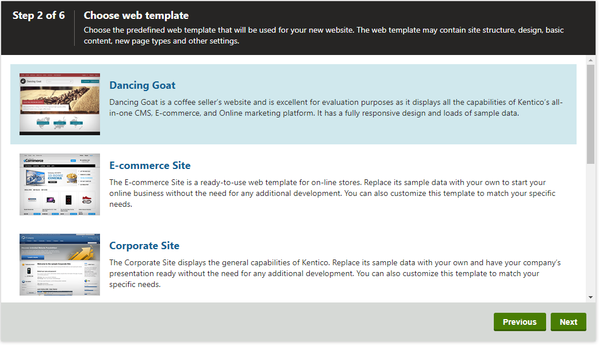
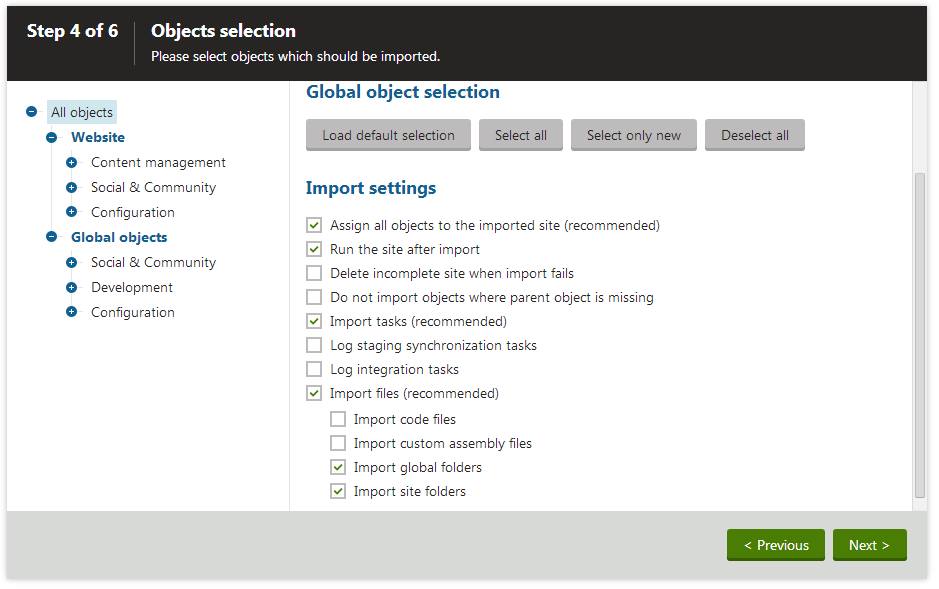

Creating new sites from templates
This page describes how to create a new website based on a predefined web template. Start the New site wizard in the Sites application and select Use web template in the first step.
Custom templates
You can create your own web templates from existing sites.
Step 2 - Choose web template
You can choose from a number of web templates. For example:
Dancing Goat showcases some of the Kentico's Integrated Marketing Solution from the point of a coffee selling business.
E-commerce Site is an e-shop showing the possibilities of the Kentico E-commerce Solution.
Corporate Site is a typical web presentation of a company. Used in most documentation examples.
Community Site is a sample community website demonstrating social networking capabilities of Kentico.
Blank Site is a blank template used for creating websites from scratch.
MVC Blank Site is a blank template used for sites that use an MVC application for their presentation. The site is only intended to be a repository for content displayed by an external MVC application. The content itself is managed by content editors.
License limitations for sample sites
Some of the sample sites use features that are only available in specific Kentico license editions. If you use a license edition lower than Kentico EMS, you may encounter problems when working with certain features (Content Personalization, for example). The initial trial license is equivalent to an EMS license.
Some of the templates are available in two versions, one using the portal engine and the other using ASPX page templates.

Selecting a web template for the new site
Choose one of the listed web templates and click Next.
Step 3 - Enter new site settings
Enter the following basic site properties:
Site display name - name of the new site displayed in the administration interface.
Site code name - unique identifier of the new site. We do not recommend changing the code name later.
Domain name - domain name under which the new site will run. The domain must be unique for each website running in the system.
Click Next to continue.
Step 4 - Objects selection
In this step, select which objects from the web template you want to import. Choose the categories displayed in the tree on the left side of the wizard.
The following options are available in the root of the tree:
Global object selection
Load default selection
Select all objects - selects all objects included in the web template.
Select only new objects - selects only those objects that do not already exist in the system (clears selection for existing objects).
Deselect all objects - clears the selection for all objects in the web template.
Import settings
Assign all objects to the imported site (recommended) - if enabled, all imported site related objects will be assigned to the imported site.
Run the site after import - if enabled, the system attempts to start the new site immediately after the import is finished.
Delete incomplete site when import fails - if enabled, the system deletes the site if any part of the import process fails.
Do not import objects where parent object is missing - if enabled, the import process skips any child objects whose parent objects is not present in the target system.
Import tasks (recommended) - if enabled, any object deletion tasks included in the web template will be imported.
Log staging synchronization tasks - if enabled, the system logs staging tasks reflecting all changes made by the creation of the new site. Check this option to synchronize the imported data to other servers connected through Content staging.
Log integration tasks - if enabled, the system logs outgoing integration tasks for all changes made by the creation of the new site. Check this option if you want to transfer the imported data to a system connected via the integration bus.
Import files (recommended)
Import code files - indicates if the new site includes code files that require compilation, i.e. files with the following extensions: cs, vb, aspx, ascx. You cannot import code files if your application is precompiled.
Import custom assembly files - if enabled, the new site includes custom assembly files bound to notification gateways, translation services, payment options, integration connectors, scheduled tasks, advanced workflow actions, marketing automation actions and smart search analyzers from the web template. Custom assemblies are those whose names do not begin with the CMS. prefix. You cannot import assembly files if your application is precompiled.
Import global folders - if enabled, the import process includes global files originally exported from the following folders:
~/App_Code/Global/
~/CMSGlobalFiles/
~/CMSScripts/Custom/
~/App_Code/Controllers/
~/Controllers/Global/
~/Views/Global/
Import site folders - if enabled, the import process includes site-related files originally exported from the following folders:
~/App_Code/<site code name>/
~/App_Data/<site code name>/
~/<site code name>/
~/Controllers/<site code name>/
~/Views/<site code name>/

Selecting objects for import from the web template
You can leave the default settings and click Next to continue.
Step 5 - Import progress
A log appears, showing the progress of the site creation.
When the process finishes, click Next.
Step 6 - The website has been created successfully
You have successfully created the new website. Click Finish to return to the Sites application.
You can now begin developing the website or managing the website content.